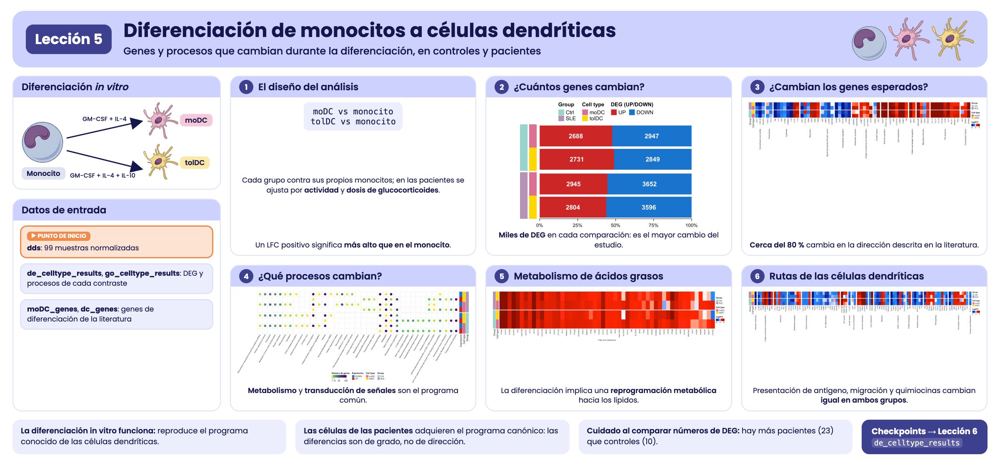
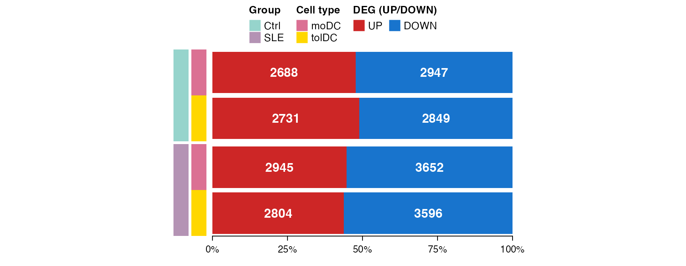
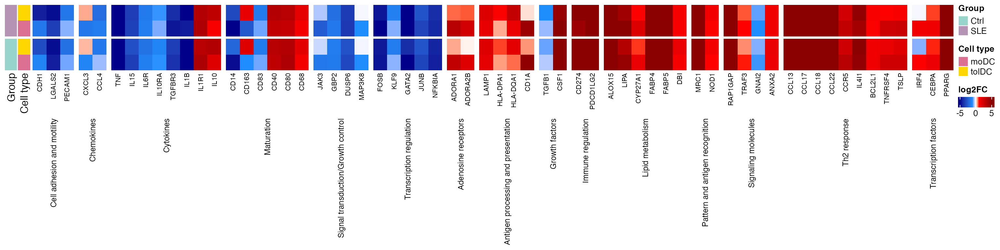
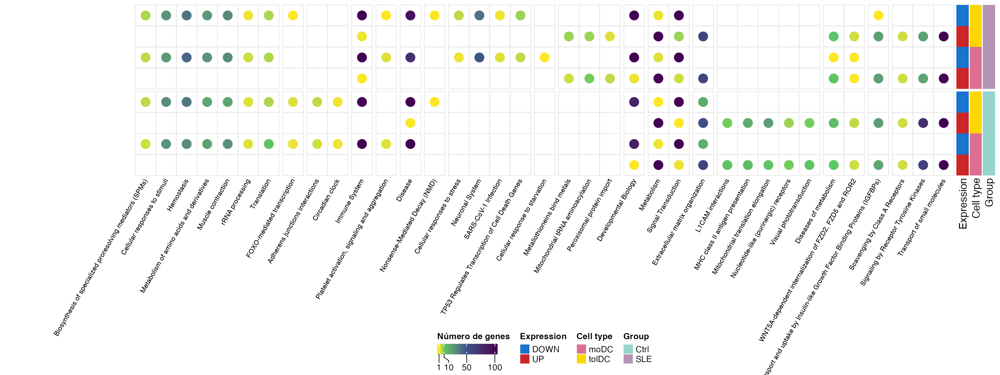
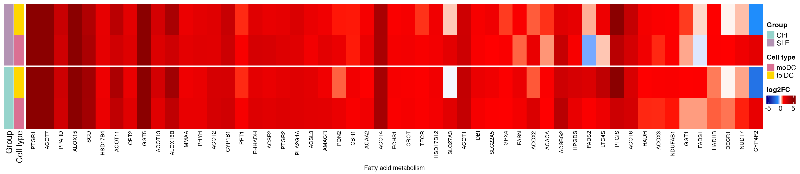
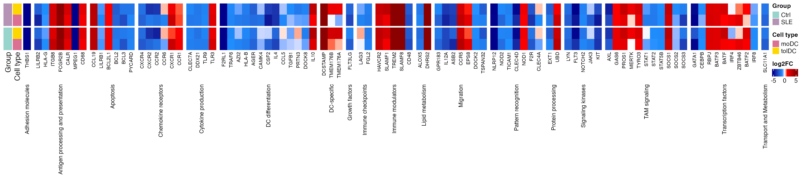
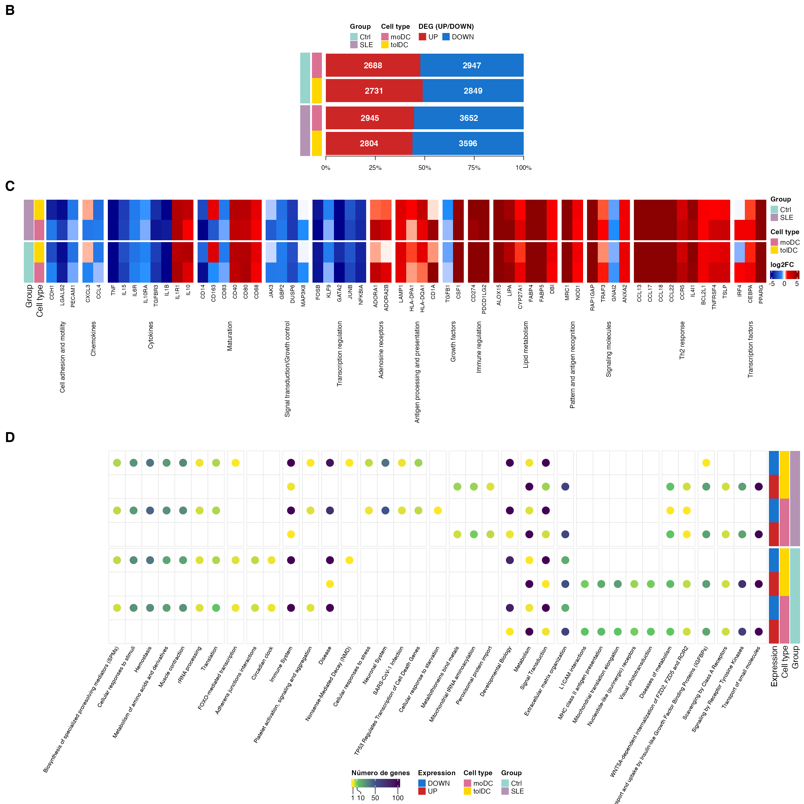
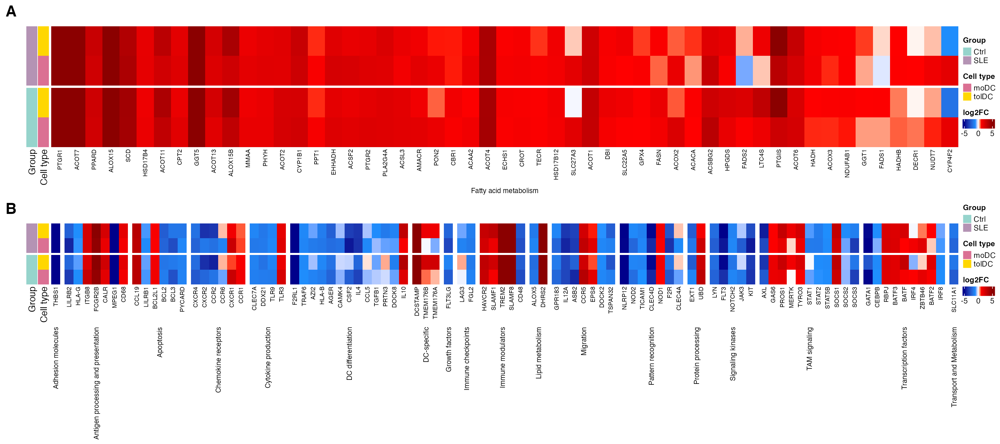

Lección 5: Diferenciación de monocitos a células dendríticas
Genes y procesos que cambian durante la diferenciación, en controles y pacientes
2026-10-31
Código:vignettes/articles/l5_DEGs_monocytes_diff_es.Rmd
l5_DEGs_monocytes_diff_es.RmdBienvenida
En las lecciones anteriores comparamos pacientes contra controles dentro de cada tipo celular. Ahora cambiamos la pregunta: ¿qué cambia cuando un monocito se diferencia en célula dendrítica?, y ¿ese proceso ocurre igual en las pacientes con lupus que en los controles?
Lo que necesitas saber antes: haber hecho las lecciones Genes diferencialmente expresados entre pacientes y controles y Funciones biológicas de los genes diferencialmente expresados.
Al terminar podrás:
- Plantear una comparación entre tipos celulares usando un nivel de referencia (los monocitos).
- Explicar por qué un diseño puede incluir covariables (actividad de la enfermedad, dosis de glucocorticoides).
- Validar un experimento comparando tus resultados con genes descritos en la literatura.
- Resumir miles de genes en rutas de Reactome e identificar cambios metabólicos.
- Reproducir las Figuras 4 y 5 del artículo.
Tiempo estimado: 1.5 horas.
Mapa de la lección
flowchart LR A["de_celltype_results
moDC y tolDC vs monocito"] --> B["4B. ¿Cuántos
genes cambian?"] A --> C["Matriz de LFC"] C --> D["4C. Genes descritos
en la literatura"] A --> E["go_celltype_results
g:Profiler"] E --> F["4D. Rutas
de Reactome"] E --> G["5A. Metabolismo de
ácidos grasos"] C --> G C --> H["5B. Rutas canónicas
de células dendríticas"]
Glosario
Estos son los términos que usaremos. Vuelve aquí cada vez que lo necesites.
- Diferenciación celular: proceso por el que una célula adquiere una identidad y funciones nuevas.
- GM-CSF, IL-4, IL-10: citocinas que se agregan al cultivo para dirigir la diferenciación.
- moDC: células dendríticas derivadas de monocitos; activan la respuesta inmune.
- tolDC: células dendríticas tolerogénicas; promueven la tolerancia inmunológica.
- Nivel de referencia: el grupo contra el que se comparan los demás (aquí, los monocitos).
- Covariable: variable que se incluye en el modelo para descontar su efecto (por ejemplo, la dosis de un medicamento).
- Comparación dentro de grupo: se compara cada tipo celular contra los monocitos del mismo grupo (controles con controles, pacientes con pacientes).
- Reprogramación metabólica: cambio en las rutas metabólicas que usa una célula al cambiar de función.

Resumen visual de la lección 5.
1. Preparación
library(GeneExprLupusMx) # datos del paquete
library(tidyverse) # manipulación de tablas y gráficas
library(ComplexHeatmap) # heatmaps
library(circlize) # escalas de color para ComplexHeatmap
library(grid) # dibujar formas dentro de los heatmaps
library(cowplot) # unir gráficas en un panel
# Objetos grandes del paquete: se descargan solo la primera vez (ver ?download_data)
filtered_txi <- download_data("filtered_txi")Colores y umbrales (los mismos de las lecciones anteriores):
cell_color <- c(monocyte = "black", moDC = "palevioletred", tolDC = "gold1")
group_color <- c(Ctrl = "#96d4ccff", SLE = "#b493b4ff")
deg_color <- c(UP = "firebrick3", DOWN = "dodgerblue3")
lfc_color <- colorRamp2(c(-5, -1, 0, 1, 5), c("darkblue", "dodgerblue", "white", "red", "darkred"))
lfc_threshold <- 1
padj_threshold <- 0.052. Paso 1: el experimento (Figura 4A)
Los monocitos de cada voluntaria se cultivaron in vitro con distintas citocinas para obtener dos tipos de células dendríticas:
flowchart LR M(["Monocito"]) -- "GM-CSF + IL-4" --> D(["moDC
célula dendrítica derivada de monocito"]) M -- "GM-CSF + IL-10" --> T(["tolDC
célula dendrítica tolerogénica"]) style M fill:#000000,color:#ffffff,stroke:#000000 style D fill:#db7093,color:#ffffff,stroke:#db7093 style T fill:#ffd700,color:#000000,stroke:#ffd700
Como cada voluntaria aporta los tres tipos celulares, podemos preguntar qué genes cambian al diferenciarse comparando cada célula dendrítica contra los monocitos. Si la diferenciación funcionó, esperamos ver cambios grandes y genes conocidos encendiéndose o apagándose.
3. Paso 2: el diseño del análisis
Hacemos la comparación dentro de cada grupo: las células dendríticas de los controles contra los monocitos de los controles, y las de las pacientes contra los monocitos de las pacientes. Así, cada grupo tiene su propia referencia.
El modelo es distinto en cada grupo:
| Grupo | Diseño | ¿Por qué? |
|---|---|---|
| Controles | ~ Cell_type |
Solo nos interesa el tipo celular |
| Pacientes | ~ SLEDAI_category + Cell_type + Dose_category |
Las pacientes difieren en actividad de la enfermedad y en dosis de glucocorticoides; incluirlas como covariables descuenta su efecto |
Veamos cómo se reparten esas covariables entre las pacientes (una fila por voluntaria):
metadata_cleaned %>%
filter(Group == "SLE", Cell_type == "monocyte") %>%
dplyr::count(SLEDAI_category, Dose_category)
#> SLEDAI_category Dose_category n
#> 1 Activity 0 4
#> 2 Activity 1 9
#> 3 No_activity 0 2
#> 4 No_activity 1 2
#> 5 Zero 0 3
#> 6 Zero 1 3Dose_category indica si la paciente recibe
glucocorticoides (1) o no (0), y SLEDAI_category, su nivel
de actividad. Al ajustar por ellas, el efecto de Cell_type
refleja la diferenciación y no estas diferencias clínicas.
Este es el análisis, el mismo que genera el checkpoint del paquete
(data-raw/lesson5_checkpoints.R). Correrlo toma unos
minutos:
library(DESeq2)
full_dds <- DESeqDataSetFromTximport(txi = filtered_txi,
colData = metadata_cleaned,
design = ~ Cell_type)
run_celltype_de <- function(group, design) {
dds_group <- full_dds[, full_dds$Group == group]
dds_group$Cell_type <- relevel(dds_group$Cell_type, ref = "monocyte")
dds_group$SLEDAI_category <- relevel(dds_group$SLEDAI_category, ref = "Zero")
dds_group$Dose_category <- relevel(dds_group$Dose_category, ref = "0")
design(dds_group) <- design
dds_group <- DESeq(dds_group)
lapply(c(moDC = "moDC", tolDC = "tolDC"), function(cell) {
res <- as.data.frame(results(dds_group, alpha = 0.05,
name = paste0("Cell_type_", cell, "_vs_monocyte")))
data.frame(gene = rownames(res), res, row.names = NULL)
})
}
ctrl <- run_celltype_de("Ctrl", ~ Cell_type)
sle <- run_celltype_de("SLE", ~ SLEDAI_category + Cell_type + Dose_category)
de_celltype_results <- list(Ctrl_moDC = ctrl$moDC, Ctrl_tolDC = ctrl$tolDC,
SLE_moDC = sle$moDC, SLE_tolDC = sle$tolDC)Usamos el checkpoint:
names(de_celltype_results)
#> [1] "Ctrl_moDC" "Ctrl_tolDC" "SLE_moDC" "SLE_tolDC"
head(de_celltype_results$Ctrl_moDC[order(de_celltype_results$Ctrl_moDC$padj), ])
#> gene baseMean log2FoldChange lfcSE stat pvalue
#> 11881 MRC1 68435.137 9.146538 0.2613979 34.99086 3.098523e-268
#> 17371 SLC7A8 4486.754 8.216655 0.2413625 34.04280 5.187183e-254
#> 6460 GPNMB 64903.360 9.443920 0.2816243 33.53376 1.553122e-246
#> 19706 TREM2 6019.286 10.614697 0.3247763 32.68310 2.714885e-234
#> 4641 ECM1 2623.108 7.358515 0.2325977 31.63623 1.172972e-219
#> 890 APOE 70848.544 11.967432 0.3869356 30.92874 4.907850e-210
#> padj
#> 11881 4.765219e-264
#> 17371 3.988684e-250
#> 6460 7.961823e-243
#> 19706 1.043806e-230
#> 4641 3.607826e-216
#> 890 1.257964e-206Un LFC positivo significa que el gen está más alto en la célula dendrítica que en el monocito; uno negativo, que se apaga al diferenciarse.
4. Paso 3: ¿cuántos genes cambian? (Figura 4B)
Con los mismos umbrales de las lecciones anteriores (|LFC| ≥ 1 y padj < 0.05), separamos los DEG de cada comparación por dirección:
deg_genes <- function(comparison, direction) {
df <- de_celltype_results[[comparison]]
df <- df[!is.na(df$padj) & df$padj < padj_threshold, ]
if (direction == "UP") df$gene[df$log2FoldChange >= lfc_threshold]
else df$gene[df$log2FoldChange <= -lfc_threshold]
}
deg_counts <- tibble(comparison = names(de_celltype_results)) %>%
mutate(Group = sub("_.*", "", comparison),
Cell_type = sub(".*_", "", comparison),
UP = sapply(comparison, function(x) length(deg_genes(x, "UP"))),
DOWN = sapply(comparison, function(x) length(deg_genes(x, "DOWN"))))
deg_counts
#> # A tibble: 4 × 5
#> comparison Group Cell_type UP DOWN
#> <chr> <chr> <chr> <int> <int>
#> 1 Ctrl_moDC Ctrl moDC 2688 2947
#> 2 Ctrl_tolDC Ctrl tolDC 2731 2849
#> 3 SLE_moDC SLE moDC 2945 3652
#> 4 SLE_tolDC SLE tolDC 2804 3596Cada comparación se identifica con dos columnas de color (grupo y
tipo celular) y a su lado se dibuja la proporción de genes que suben y
bajan. Lo construimos con ComplexHeatmap: un
heatmap de una sola columna para el grupo, una anotación para
el tipo celular y otra con un barplot:
# proporción de genes que suben y bajan en cada comparación
deg_prop <- as.matrix(deg_counts[, c("UP", "DOWN")]) / (deg_counts$UP + deg_counts$DOWN)
# tipo celular, a la derecha del grupo
celltype_anno <- rowAnnotation("Cell type" = deg_counts$Cell_type,
col = list("Cell type" = cell_color[c("moDC", "tolDC")]),
show_annotation_name = FALSE)
# barplot de proporciones (UP primero, DOWN después) con el número de genes dentro.
# Es una anotación personalizada: recibe las filas de cada bloque (index) y las dibuja.
deg_barplot <- rowAnnotation(
"DEG (UP/DOWN)" = AnnotationFunction(
fun = function(index, k, n) {
pushViewport(viewport(xscale = c(0, 1), yscale = c(0.5, length(index) + 0.5)))
y <- rev(seq_along(index)) # la primera fila va arriba
up <- deg_prop[index, "UP"]
down <- deg_prop[index, "DOWN"]
label <- gpar(col = "white", fontface = "bold")
grid.rect(x = 0, y = y, width = up, height = 0.9, just = "left",
default.units = "native", gp = gpar(fill = deg_color[["UP"]], col = NA))
grid.rect(x = up, y = y, width = down, height = 0.9, just = "left",
default.units = "native", gp = gpar(fill = deg_color[["DOWN"]], col = NA))
grid.text(deg_counts$UP[index], x = up / 2, y = y, default.units = "native", gp = label)
grid.text(deg_counts$DOWN[index], x = up + down / 2, y = y, default.units = "native", gp = label)
if (k == n) { # eje solo debajo del último bloque
grid.xaxis(at = c(0, 0.25, 0.5, 0.75, 1), label = c("0%", "25%", "50%", "75%", "100%"),
gp = gpar(fontsize = 9))
}
popViewport()
},
var_import = list(deg_prop, deg_counts, deg_color),
subsettable = TRUE, which = "row", width = unit(10, "cm")),
show_annotation_name = FALSE)
# heatmap base: una columna con el grupo, dividida en Ctrl y SLE
group_ht <- Heatmap(deg_counts$Group, name = "Group", col = group_color,
width = unit(5, "mm"), row_split = deg_counts$Group, row_title = NULL,
show_row_names = FALSE, show_column_names = FALSE,
right_annotation = celltype_anno)
ht_fig4b <- group_ht + deg_barplot
lgd_deg <- Legend(labels = c("UP", "DOWN"), title = "DEG (UP/DOWN)",
legend_gp = gpar(fill = deg_color), nrow = 1)
draw(ht_fig4b, heatmap_legend_list = list(lgd_deg), merge_legends = TRUE,
heatmap_legend_side = "top", annotation_legend_side = "top",
padding = unit(c(10, 2, 2, 2), "mm")) # margen inferior para el eje
Miles de genes cambian en cada comparación, frente a los 94 que cambian entre pacientes y controles (lección 3). La diferenciación es, por mucho, el mayor cambio transcriptómico del estudio, igual que vimos en el PCA de la lección 2. Las pacientes tienen algo más de genes que bajan que los controles.
Reto 1. ¿Cuántos genes suben en las cuatro comparaciones (moDC y tolDC, en controles y pacientes)? ¿Y cuántos bajan en las cuatro?
Pista: Reduce(intersect, ...) aplicado a una
lista de vectores.
Ver solución
up_all <- Reduce(intersect, lapply(names(de_celltype_results), deg_genes, direction = "UP"))
down_all <- Reduce(intersect, lapply(names(de_celltype_results), deg_genes, direction = "DOWN"))
c(UP = length(up_all), DOWN = length(down_all))
#> UP DOWN
#> 1924 2164Más de la mitad de los DEG de cada comparación son compartidos: hay un programa común de diferenciación que no depende del tipo de célula dendrítica ni del grupo.
5. Una matriz de LFC para todos los DEG
Para las siguientes gráficas necesitamos una matriz con el LFC de cada gen en las cuatro comparaciones. Incluimos los genes que son DEG en al menos una comparación:
all_deg <- unique(unlist(lapply(names(de_celltype_results), function(x)
c(deg_genes(x, "UP"), deg_genes(x, "DOWN")))))
length(all_deg)
#> [1] 8111
lfc_mat <- sapply(de_celltype_results, function(df)
df$log2FoldChange[match(all_deg, df$gene)])
rownames(lfc_mat) <- all_deg
lfc_mat[1:4, ]
#> Ctrl_moDC Ctrl_tolDC SLE_moDC SLE_tolDC
#> A2M 9.742309 7.948722 9.925345 8.432369
#> A4GNT 2.991895 1.377433 3.308340 2.056710
#> AARS2 1.130076 1.071933 1.282804 1.263579
#> ABCA6 3.162758 2.327826 2.237093 2.249498Como las mostraremos varias veces, escribimos una función que dibuja un heatmap de LFC con una fila por comparación y una columna por gen, agrupando los genes por proceso:
# orden de las filas: pacientes arriba, tolDC antes que moDC
comparison_info <- tibble(comparison = c("SLE_tolDC", "SLE_moDC", "Ctrl_tolDC", "Ctrl_moDC"),
Group = sub("_.*", "", comparison),
Cell_type = sub(".*_", "", comparison))
plot_lfc_heatmap <- function(genes, process = NULL, process_levels = unique(process),
title = NULL, title_rot = 90) {
mat <- t(lfc_mat[genes, comparison_info$comparison, drop = FALSE]) # filas = comparaciones
Heatmap(
mat, name = "log2FC", col = lfc_color, na_col = "gray",
cluster_rows = FALSE, cluster_columns = FALSE,
show_row_names = FALSE, column_names_gp = gpar(fontsize = 8),
left_annotation = rowAnnotation(
Group = comparison_info$Group, "Cell type" = comparison_info$Cell_type,
col = list(Group = group_color, "Cell type" = cell_color)),
row_split = factor(comparison_info$Group, levels = c("SLE", "Ctrl")), row_title = NULL,
column_split = if (is.null(process)) NULL else factor(process, levels = process_levels),
column_title = title, column_title_rot = title_rot, column_title_side = "bottom",
column_title_gp = gpar(fontsize = 9), column_gap = unit(2, "mm"),
heatmap_legend_param = list(direction = "horizontal"))
}6. Paso 4: ¿cambian los genes que esperábamos? (Figura 4C)
Si nuestras células se diferenciaron bien, los genes que la
literatura describe para la diferenciación de monocito a moDC deberían
cambiar en la misma dirección. La lista curada moDC_genes
reúne 90 genes de este tipo, agrupados por proceso:
dplyr::count(moDC_genes, process, sort = TRUE)
#> process n
#> 1 Cytokines 11
#> 2 Th2 response 10
#> 3 Maturation 7
#> 4 Transcription regulation 7
#> 5 Cell adhesion and motility 6
#> 6 Lipid metabolism 6
#> 7 Regulatory 6
#> 8 Signaling molecules 6
#> 9 Antigen processing and presentation 4
#> 10 Chemokines 4
#> 11 Signal transduction/Growth control 4
#> 12 Pattern and antigen recognition 3
#> 13 Transcription factors 3
#> 14 Adenosine receptors 2
#> 15 Ca2+ binding 2
#> 16 Growth factors 2
#> 17 Immune regulation 2
#> 18 chaperones 2
#> 19 oxidative stress 2
#> 20 TP53 Regulates Transcription of Cell Death Genes 1Usamos los procesos de la Figura 4C: primero los cambios esperados de la diferenciación (maduración, citocinas, quimiocinas…) y después procesos que dependen del contexto (respuesta Th2, metabolismo de lípidos…):
fig4c_processes <- c(
# cambios esperados en la diferenciación
"Cell adhesion and motility", "Chemokines", "Cytokines", "Maturation",
"Signal transduction/Growth control", "Transcription regulation",
# procesos que cambian según el contexto
"Adenosine receptors", "Antigen processing and presentation", "Growth factors",
"Immune regulation", "Lipid metabolism", "Pattern and antigen recognition",
"Signaling molecules", "Th2 response", "Transcription factors")
fig4c_genes <- moDC_genes %>%
filter(process %in% fig4c_processes, gene %in% rownames(lfc_mat)) %>%
mutate(process = factor(process, levels = fig4c_processes)) %>%
arrange(process)
nrow(fig4c_genes)
#> [1] 62¿Coincide la dirección del cambio en nuestras moDC de controles con lo descrito en la literatura?
observed <- ifelse(lfc_mat[fig4c_genes$gene, "Ctrl_moDC"] > 0, "Upregulated", "Downregulated")
mean(observed == fig4c_genes$Expression)
#> [1] 0.7903226Cerca del 80 % de los genes cambia en la dirección esperada: la diferenciación in vitro reproduce el programa conocido.
ht_fig4c <- plot_lfc_heatmap(fig4c_genes$gene, process = fig4c_genes$process,
process_levels = fig4c_processes,
title = levels(fig4c_genes$process))
draw(ht_fig4c, heatmap_legend_side = "right", annotation_legend_side = "right")
El marcador de monocito CD14 se apaga y
las moléculas coestimuladoras de las células dendríticas
(CD40, CD80) se encienden, en
controles y en pacientes. Las tolDC comparten buena parte de este
programa, pero no todo: por ejemplo, encienden
CD163, un marcador asociado a la tolerancia que las moDC
apagan.
Reto 2. ¿Qué genes de fig4c_genes
no cambian en la dirección descrita por la literatura
en las moDC de los controles?
Ver solución
fig4c_genes %>%
mutate(observed = observed, Ctrl_moDC_LFC = round(lfc_mat[gene, "Ctrl_moDC"], 2)) %>%
filter(observed != Expression) %>%
dplyr::select(gene, process, Expression, observed, Ctrl_moDC_LFC)
#> gene process Expression observed Ctrl_moDC_LFC
#> 1 IL1B Cytokines Upregulated Downregulated -5.82
#> 2 CD83 Maturation Upregulated Downregulated -0.79
#> 3 CD40 Maturation Downregulated Upregulated 3.16
#> 4 CD80 Maturation Downregulated Upregulated 3.75
#> 5 CD68 Maturation Downregulated Upregulated 1.40
#> 6 TGFB1 Growth factors Upregulated Downregulated -0.45
#> 7 CD274 Immune regulation Downregulated Upregulated 5.05
#> 8 PDCD1LG2 Immune regulation Downregulated Upregulated 6.28
#> 9 GNAI2 Signaling molecules Upregulated Downregulated -0.95
#> 10 IL4I1 Th2 response Downregulated Upregulated 4.70
#> 11 BCL2L1 Th2 response Downregulated Upregulated 1.47
#> 12 TNFRSF4 Th2 response Downregulated Upregulated 2.64
#> 13 TSLP Th2 response Downregulated Upregulated 2.65Las discrepancias pueden deberse a diferencias en el protocolo de cultivo o a que los estudios de referencia usaron otras condiciones. Es normal que no todos los genes coincidan.
7. Paso 5: ¿qué procesos cambian? (Figura 4D)
7.1 Enriquecimiento funcional
Como en la lección anterior, buscamos los términos enriquecidos en cada lista de DEG con g:Profiler, ahora en GO:BP, KEGG y Reactome. Las listas tienen unos 3,000 genes cada una, así que se consultan una por una:
library(gprofiler2)
set_base_url("https://biit.cs.ut.ee/gprofiler_archive3/e113_eg59_p19") # versión archivada (junio de 2025)
deg_lists <- list()
for (group in c("Ctrl", "SLE")) for (cell in c("moDC", "tolDC")) for (direction in c("UP", "DOWN"))
deg_lists[[paste(group, direction, cell, sep = "_")]] <- deg_genes(paste(group, cell, sep = "_"), direction)
gost_res <- lapply(names(deg_lists), function(query)
gost(deg_lists[query], organism = "hsapiens", correction_method = "fdr",
user_threshold = 0.05, sources = c("GO:BP", "KEGG", "REAC"), evcodes = TRUE))El resultado está en el checkpoint
go_celltype_results:
attr(go_celltype_results, "gprofiler_version")
#> [1] "e113_eg59_p19_903d2221"
go_celltype_results %>%
dplyr::count(query, source) %>%
pivot_wider(names_from = source, values_from = n)
#> # A tibble: 8 × 4
#> query `GO:BP` KEGG REAC
#> <chr> <int> <int> <int>
#> 1 Ctrl_DOWN_moDC 1683 34 106
#> 2 Ctrl_DOWN_tolDC 1805 43 152
#> 3 Ctrl_UP_moDC 1235 15 39
#> 4 Ctrl_UP_tolDC 914 33 27
#> 5 SLE_DOWN_moDC 1910 71 96
#> 6 SLE_DOWN_tolDC 1997 63 95
#> 7 SLE_UP_moDC 960 26 30
#> 8 SLE_UP_tolDC 912 24 277.2 Resumir en rutas padre de Reactome
Miles de términos son demasiados para verlos. Los resumimos como en la lección 4: a cada gen le asignamos su ruta padre de Reactome, el término más general (con más genes) en el que aparece. Si un gen tiene ruta padre en los controles, usamos esa misma ruta en las pacientes, para comparar ambos grupos con las mismas categorías:
reac_parent <- go_celltype_results %>%
filter(source == "REAC") %>%
mutate(Group = sub("_.*", "", query)) %>%
separate_rows(intersection, sep = ",") %>%
dplyr::rename(gene = intersection) %>%
group_by(Group, gene) %>%
summarise(parent = term_name[which.max(term_size)], .groups = "drop")
ctrl_parent <- reac_parent %>% filter(Group == "Ctrl") %>% dplyr::select(gene, ctrl_parent = parent)
deg_long <- expand_grid(Group = c("Ctrl", "SLE"), direction = c("UP", "DOWN"),
Cell_type = c("moDC", "tolDC")) %>%
mutate(query = paste(Group, direction, Cell_type, sep = "_"),
gene = map2(paste(Group, Cell_type, sep = "_"), direction, deg_genes)) %>%
unnest(gene)
parent_counts <- deg_long %>%
inner_join(reac_parent, by = c("Group", "gene")) %>%
left_join(ctrl_parent, by = "gene") %>%
mutate(parent = ifelse(Group == "SLE" & !is.na(ctrl_parent), ctrl_parent, parent)) %>%
dplyr::count(parent, query)
dplyr::n_distinct(parent_counts$parent) # rutas padre
#> [1] 37Construimos una matriz de rutas × listas con el número de genes (vacía si la ruta no aparece en esa lista):
query_order <- c("Ctrl_UP_moDC", "Ctrl_DOWN_moDC", "Ctrl_UP_tolDC", "Ctrl_DOWN_tolDC",
"SLE_UP_moDC", "SLE_DOWN_moDC", "SLE_UP_tolDC", "SLE_DOWN_tolDC")
pathway_mat <- parent_counts %>%
pivot_wider(names_from = query, values_from = n) %>%
column_to_rownames("parent") %>%
as.matrix()
pathway_mat <- t(pathway_mat[, query_order]) # filas = listas, columnas = rutas
pathway_mat <- pathway_mat[, order(tolower(colnames(pathway_mat)))] # rutas en orden alfabético
# agrupar las rutas según en qué listas aparecen: UP o DOWN si la ruta está en esa lista,
# NA si no está (por ejemplo, "UP_NA_UP_NA_NA_NA_NA_NA")
pathway_pattern <- apply(pathway_mat, 2, function(x)
paste(ifelse(is.na(x), "NA", ifelse(grepl("_UP_", query_order), "UP", "DOWN")), collapse = "_"))
# orden de las filas: pacientes arriba; tolDC antes que moDC; DOWN antes que UP
row_order <- c("SLE_DOWN_tolDC", "SLE_UP_tolDC", "SLE_DOWN_moDC", "SLE_UP_moDC",
"Ctrl_DOWN_tolDC", "Ctrl_UP_tolDC", "Ctrl_DOWN_moDC", "Ctrl_UP_moDC")
pathway_mat <- pathway_mat[row_order, ]
pathway_mat[, 1:4]
#> Adherens junctions interactions
#> SLE_DOWN_tolDC NA
#> SLE_UP_tolDC NA
#> SLE_DOWN_moDC NA
#> SLE_UP_moDC NA
#> Ctrl_DOWN_tolDC 5
#> Ctrl_UP_tolDC NA
#> Ctrl_DOWN_moDC 4
#> Ctrl_UP_moDC NA
#> Biosynthesis of specialized proresolving mediators (SPMs)
#> SLE_DOWN_tolDC 6
#> SLE_UP_tolDC NA
#> SLE_DOWN_moDC 5
#> SLE_UP_moDC NA
#> Ctrl_DOWN_tolDC 5
#> Ctrl_UP_tolDC NA
#> Ctrl_DOWN_moDC 4
#> Ctrl_UP_moDC NA
#> Cellular response to starvation Cellular responses to stimuli
#> SLE_DOWN_tolDC NA 27
#> SLE_UP_tolDC NA NA
#> SLE_DOWN_moDC 1 25
#> SLE_UP_moDC NA NA
#> Ctrl_DOWN_tolDC NA 29
#> Ctrl_UP_tolDC NA NA
#> Ctrl_DOWN_moDC NA 27
#> Ctrl_UP_moDC NA NA
count_color <- colorRamp2(c(1, 10, 50, 100), c("#FDE725", "#5DC863", "#3B528B", "#440154"))
query_info <- tibble(query = row_order,
Group = sub("_.*", "", query),
Expression = sub("^[^_]+_([^_]+)_.*", "\\1", query),
Cell_type = sub(".*_", "", query))
ht_fig4d <- Heatmap(
pathway_mat, name = "Número de genes", col = count_color, na_col = "white",
cluster_rows = FALSE, cluster_columns = FALSE, show_row_names = FALSE,
column_names_gp = gpar(fontsize = 8), column_names_rot = 60,
rect_gp = gpar(type = "none"),
layer_fun = function(j, i, x, y, w, h, fill) {
grid.rect(x = x, y = y, width = w, height = h, gp = gpar(col = "gray90", fill = NA))
value <- pindex(pathway_mat, i, j)
keep <- !is.na(value) # un círculo solo donde la ruta aparece
if (any(keep)) grid.circle(x = x[keep], y = y[keep], r = unit(2, "mm"),
gp = gpar(fill = count_color(value[keep]), col = NA))
},
right_annotation = rowAnnotation(
Expression = query_info$Expression, "Cell type" = query_info$Cell_type,
Group = query_info$Group,
col = list(Expression = deg_color, "Cell type" = cell_color, Group = group_color)),
row_split = factor(query_info$Group, levels = c("SLE", "Ctrl")), row_title = NULL,
column_split = pathway_pattern, column_title = NULL, column_gap = unit(1.5, "mm"),
heatmap_legend_param = list(direction = "horizontal", at = c(1, 10, 50, 100)))
draw(ht_fig4d, merge_legends = TRUE, heatmap_legend_side = "bottom",
annotation_legend_side = "bottom", padding = unit(c(2, 55, 2, 2), "mm")) # margen para las etiquetas
Cada columna es una ruta padre de Reactome y cada círculo indica cuántos DEG de esa lista pertenecen a ella. Las rutas están agrupadas según en qué listas aparecen, y las filas muestran primero a las pacientes.
- Rutas comunes: “Metabolism” y “Signal Transduction” aparecen en las ocho listas, con muchos genes. Son el programa común de la diferenciación.
- Rutas solo de los controles: “MHC class II antigen presentation”, “L1CAM interactions” y otras aparecen únicamente entre los genes que suben en las células dendríticas de los controles. La presentación de antígenos por MHC de clase II es una función central de las células dendríticas; que no aparezca enriquecida en las pacientes sugiere que este programa se activa menos en el lupus.
- Rutas solo de las pacientes: “Metallothioneins bind metals”, “Mitochondrial tRNA aminoacylation” y “Peroxisomal protein import” aparecen solo entre los genes que suben en las pacientes.
Recuerda que un círculo indica enriquecimiento, no un valor de expresión: para confirmar estas diferencias habría que comparar directamente las células dendríticas de pacientes y controles.
8. Paso 6: metabolismo de ácidos grasos (Figura 5A)
Una célula dendrítica no solo cambia sus marcadores: también cambia su metabolismo. Tomamos los genes del término de Reactome “Fatty acid metabolism” en cualquiera de las listas:
fatty_term <- go_celltype_results %>%
filter(source == "REAC", term_name == "Fatty acid metabolism") %>%
separate_rows(intersection, sep = ",") %>%
dplyr::rename(gene = intersection)
# Orden: lista por lista (primero los controles) y, dentro de cada
# lista, los genes más significativos primero (menor padj, mayor |LFC|)
fatty_genes <- unlist(lapply(query_order, function(q) {
genes <- fatty_term$gene[fatty_term$query == q]
de <- de_celltype_results[[sub("_(UP|DOWN)_", "_", q)]] # p. ej., Ctrl_UP_moDC -> Ctrl_moDC
de <- de[de$gene %in% genes, ]
de$gene[order(de$padj, -abs(de$log2FoldChange))]
})) %>% unique()
length(fatty_genes)
#> [1] 53
head(fatty_genes, 10)
#> [1] "PTGR1" "ACOT7" "PPARD" "ALOX15" "SCD" "HSD17B4" "ACOT11"
#> [8] "CPT2" "GGT5" "ACOT13"
ht_fig5a <- plot_lfc_heatmap(fatty_genes, title = "Fatty acid metabolism", title_rot = 0)
draw(ht_fig5a, heatmap_legend_side = "right", annotation_legend_side = "right")
La mayoría de estos genes suben en ambos tipos de células dendríticas y en ambos grupos: la diferenciación implica una reprogramación metabólica hacia la síntesis y el uso de lípidos. Recuerda que en la lección 4 encontramos genes del metabolismo de lípidos alterados en las tolDC de las pacientes; aquí vemos que ese metabolismo es central para estas células.
9. Paso 7: rutas canónicas de las células dendríticas (Figura 5B)
Por último, revisamos genes asociados a la función de las células
dendríticas según Gene Ontology (lista curada dc_genes):
diferenciación, presentación de antígeno, migración, receptores de
quimiocinas…
fig5b_genes <- dc_genes %>%
filter(gene %in% rownames(lfc_mat)) %>%
arrange(process)
dplyr::count(fig5b_genes, process)
#> process n
#> 1 Adhesion molecules 1
#> 2 Antigen processing and presentation 7
#> 3 Apoptosis 6
#> 4 Chemokine receptors 6
#> 5 Cytokine production 4
#> 6 DC differentiation 13
#> 7 DC-specific 3
#> 8 Growth factors 1
#> 9 Immune checkpoints 2
#> 10 Immune modulators 5
#> 11 Lipid metabolism 2
#> 12 Migration 7
#> 13 Pattern recognition 7
#> 14 Protein processing 2
#> 15 Signaling kinases 5
#> 16 TAM signaling 11
#> 17 Transcription factors 9
#> 18 Transport and Metabolism 1
ht_fig5b <- plot_lfc_heatmap(fig5b_genes$gene, process = fig5b_genes$process,
title = sort(unique(fig5b_genes$process)))
draw(ht_fig5b, heatmap_legend_side = "right", annotation_legend_side = "right")
Los genes de presentación de antígeno, migración y receptores de quimiocinas cambian de forma parecida en controles y pacientes: las células dendríticas de las pacientes adquieren el programa canónico de diferenciación. Las diferencias entre grupos son de grado, no de dirección.
Reto 3. ¿Hay genes de dc_genes que
cambien en direcciones opuestas entre las moDC de
controles y las de pacientes?
Pista: compara el signo de
lfc_mat[, "Ctrl_moDC"] y
lfc_mat[, "SLE_moDC"].
Ver solución
fig5b_genes %>%
mutate(Ctrl_moDC = lfc_mat[gene, "Ctrl_moDC"], SLE_moDC = lfc_mat[gene, "SLE_moDC"]) %>%
filter(sign(Ctrl_moDC) != sign(SLE_moDC)) %>%
mutate(across(c(Ctrl_moDC, SLE_moDC), ~ round(.x, 2)))
#> gene process GOterm info Ctrl_moDC SLE_moDC
#> 1 TMEM176B DC-specific DC differentiation 0.73 -0.06
#> 2 TMEM176A DC-specific DC differentiation 0.38 -0.73Son pocos genes y con LFC pequeños: el programa de diferenciación es muy parecido en ambos grupos.
10. Para terminar: las Figuras 4 y 5 del artículo
El panel A de la Figura 4 es el esquema de la sección 2. Unimos los
demás paneles; el argumento padding deja un margen arriba y
a la izquierda de cada panel para que las letras no se encimen con las
gráficas:
grab <- function(ht, ...) {
grid::grid.grabExpr(draw(ht, merge_legends = TRUE, ...), wrap.grobs = TRUE)
}
figure_4 <- plot_grid(
grab(ht_fig4b, heatmap_legend_list = list(lgd_deg),
heatmap_legend_side = "top", annotation_legend_side = "top",
padding = unit(c(10, 12, 12, 2), "mm")),
grab(ht_fig4c, heatmap_legend_side = "right", annotation_legend_side = "right",
padding = unit(c(2, 12, 12, 2), "mm")),
grab(ht_fig4d, heatmap_legend_side = "bottom", annotation_legend_side = "bottom",
padding = unit(c(2, 55, 12, 2), "mm")),
labels = c("B", "C", "D"), label_size = 20, ncol = 1, rel_heights = c(0.7, 1, 1.5))
figure_4
# Número de DEG por comparación, para el pie de figura
n_deg <- function(comparison, direction) {
format(length(deg_genes(comparison, direction)), big.mark = ",")
}Figura 4. Diferenciación de monocitos a moDC y tolDC. (A) Esquema de la diferenciación in vitro de monocitos en células dendríticas (sección 2). (B) Número de DEG en las células dendríticas de controles y pacientes, usando los monocitos como referencia. En los controles, 2,688 genes suben y 2,947 bajan en las moDC, y 2,731 suben y 2,849 bajan en las tolDC; en las pacientes, 2,945 suben y 3,652 bajan en las moDC, y 2,804 suben y 3,596 bajan en las tolDC. (C) Genes descritos previamente como aumentados o disminuidos durante la diferenciación de monocitos a moDC; se muestran los cambios esperados en nuestros datos. (D) Rutas padre de Reactome enriquecidas entre los DEG de cada lista (g:Profiler); el color indica el número de genes. Los DEG se seleccionaron con |LFC| ≥ 1 y padj < 0.05. SLE, lupus eritematoso sistémico; Ctrl, control sano; moDC, células dendríticas derivadas de monocitos; tolDC, células dendríticas tolerogénicas.
figure_5 <- plot_grid(
grab(ht_fig5a, heatmap_legend_side = "right", annotation_legend_side = "right",
padding = unit(c(2, 12, 12, 2), "mm")),
grab(ht_fig5b, heatmap_legend_side = "right", annotation_legend_side = "right",
padding = unit(c(2, 12, 12, 2), "mm")),
labels = c("A", "B"), label_size = 20, ncol = 1, rel_heights = c(0.8, 1))
figure_5
Figura 5. DEG entre células dendríticas y monocitos de pacientes con lupus y controles, relacionados con la diferenciación de células dendríticas. (A) Los 53 DEG del término de Reactome Fatty acid metabolism, que reflejan la reprogramación metabólica en la transición de monocito a célula dendrítica. (B) 92 genes asociados a rutas canónicas de diferenciación y función de las células dendríticas (Gene Ontology). La escala de color indica el LFC de cada tipo de célula dendrítica respecto a los monocitos en cada grupo. Los DEG se seleccionaron con |LFC| ≥ 1 y padj < 0.05. SLE, lupus eritematoso sistémico; Ctrl, control sano; moDC, células dendríticas derivadas de monocitos; tolDC, células dendríticas tolerogénicas.
Las figuras originales se encuentran en el artículo.
Para guardarlas en alta resolución:
11. Resumen
| Paso | Función clave | ¿Para qué? |
|---|---|---|
| Diseño con covariables | design(dds) <- ~ covariables + Cell_type |
Descontar efectos clínicos |
| Comparar contra una referencia | relevel(Cell_type, ref = "monocyte") |
Medir el cambio de la diferenciación |
| Contar DEG | deg_genes() |
Dimensionar el cambio |
| Validar con la literatura | moDC_genes |
Confirmar que la diferenciación funcionó |
| Resumir funciones | rutas padre de Reactome | Ver procesos en lugar de miles de genes |
| Explorar un proceso | heatmap de LFC | Ver cómo cambia cada gen en cada comparación |
Errores comunes de principiante
- Comparar números de DEG entre grupos con distinto tamaño de muestra: con más muestras hay más poder y más DEG (aquí, 23 pacientes contra 10 controles).
- Olvidar las covariables: si las pacientes difieren en tratamiento, su efecto puede confundirse con el del tipo celular.
- Interpretar un LFC sin su referencia: aquí un LFC positivo es “más alto que en el monocito”, no “más alto en pacientes”.
- Esperar que todos los genes de la literatura coincidan: los protocolos de cultivo varían.
12. Próximos pasos
La diferenciación de monocitos a células dendríticas sigue un programa muy similar en pacientes y controles, con cambios importantes en el sistema inmune y en el metabolismo de lípidos. La lección La firma transcripcional de las células dendríticas tolerogénicas se enfoca en las tolDC y evalúa si las de las pacientes adquieren la firma tolerogénica descrita en la literatura.
Para continuar, da clic en el botón Siguiente lección: La firma de las tolDC al final de esta página.
↑ Volver a InicioInformación de la sesión
sessionInfo()
#> R version 4.6.0 (2026-04-24)
#> Platform: aarch64-apple-darwin23
#> Running under: macOS Tahoe 26.6.2
#>
#> Matrix products: default
#> BLAS: /Library/Frameworks/R.framework/Versions/4.6/Resources/lib/libRblas.0.dylib
#> LAPACK: /Library/Frameworks/R.framework/Versions/4.6/Resources/lib/libRlapack.dylib; LAPACK version 3.12.1
#>
#> locale:
#> [1] en_US.UTF-8/en_US.UTF-8/en_US.UTF-8/C/en_US.UTF-8/en_US.UTF-8
#>
#> time zone: America/Mexico_City
#> tzcode source: internal
#>
#> attached base packages:
#> [1] grid stats graphics grDevices utils datasets methods
#> [8] base
#>
#> other attached packages:
#> [1] cowplot_1.2.0 circlize_0.4.18
#> [3] ComplexHeatmap_2.28.0 lubridate_1.9.5
#> [5] forcats_1.0.1 stringr_1.6.0
#> [7] dplyr_1.2.1 purrr_1.2.2
#> [9] readr_2.2.0 tidyr_1.3.2
#> [11] tibble_3.3.1 ggplot2_4.0.3
#> [13] tidyverse_2.0.0 GeneExprLupusMx_0.1.0.9000
#>
#> loaded via a namespace (and not attached):
#> [1] shape_1.4.6.1 gtable_0.3.6 rjson_0.2.23
#> [4] xfun_0.60 bslib_0.11.0 htmlwidgets_1.6.4
#> [7] GlobalOptions_0.1.4 tzdb_0.5.0 vctrs_0.7.3
#> [10] tools_4.6.0 generics_0.1.4 stats4_4.6.0
#> [13] parallel_4.6.0 cluster_2.1.8.2 pkgconfig_2.0.3
#> [16] RColorBrewer_1.1-3 S7_0.2.2 desc_1.4.3
#> [19] S4Vectors_0.50.1 lifecycle_1.0.5 compiler_4.6.0
#> [22] farver_2.1.2 textshaping_1.0.5 codetools_0.2-20
#> [25] clue_0.3-68 htmltools_0.5.9 sass_0.4.10
#> [28] yaml_2.3.12 pillar_1.11.1 pkgdown_2.2.1
#> [31] crayon_1.5.3 jquerylib_0.1.4 cachem_1.1.0
#> [34] magick_2.9.1 iterators_1.0.14 foreach_1.5.2
#> [37] tidyselect_1.2.1 digest_0.6.39 stringi_1.8.9
#> [40] labeling_0.4.3 fastmap_1.2.0 colorspace_2.1-3
#> [43] cli_3.6.6 magrittr_2.0.5 utf8_1.2.6
#> [46] withr_3.0.3 scales_1.4.0 timechange_0.4.0
#> [49] rmarkdown_2.31 matrixStats_1.5.0 otel_0.2.0
#> [52] ragg_1.5.2 png_0.1-9 GetoptLong_1.1.1
#> [55] hms_1.1.4 evaluate_1.0.5 knitr_1.51
#> [58] IRanges_2.46.0 doParallel_1.0.17 rlang_1.3.0
#> [61] Rcpp_1.1.2 glue_1.8.1 BiocGenerics_0.58.1
#> [64] rstudioapi_0.19.0 jsonlite_2.0.0 R6_2.6.1
#> [67] systemfonts_1.3.2 fs_2.1.0